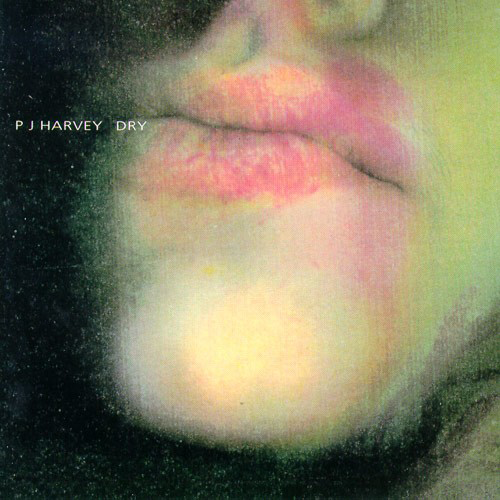
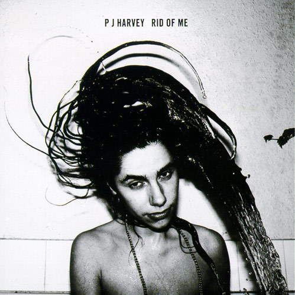
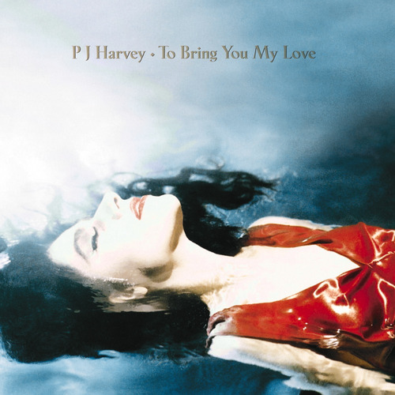
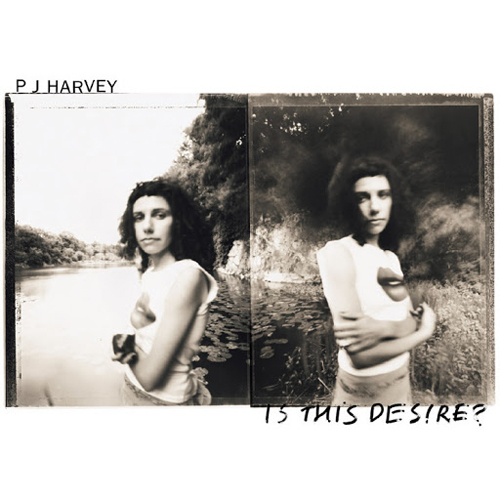
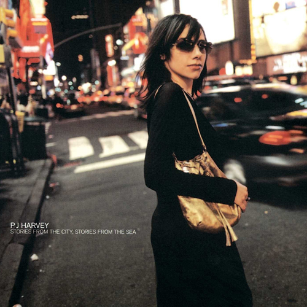
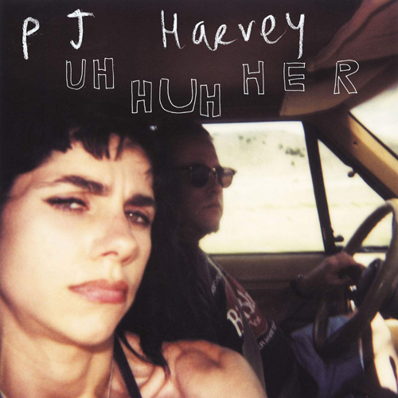
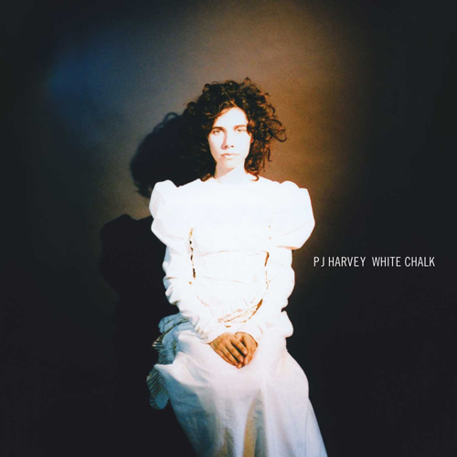
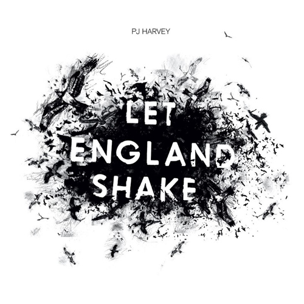
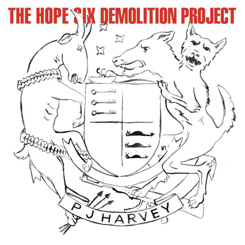

discografia
- Oh My Lover
- O Stella
- Dress
- Victory
- Happy and Bleeding
- Sheela-Na-Gig
- Hair
- Joe
- Plants and Rags
- Fountain
- Water

- Fecha: 30 Marzo, 1992
- Label: Too Pure
- Formato: CD, LP, CS
- Rid of Me
- Missed
- Legs
- Rub 'til It Bleeds
- Hook
- Man-Size Sextet
- Highway 61 Revisited (Bob Dylan cover)
- 50ft Queenie
- Yuri-G
- Man-Size
- Dry
- Me-Jane
- Snake
- Ecstasy

- Fecha: 4 de mayo, 1993
- Label: Island
- Formato: CD, LP, CS
- To Bring You My Love
- Meet Ze Monsta
- Working for the Man
- C'mon Billy
- Teclo
- Long Snake Moan
- Down by the Water
- I Think I'm a Mother
- Send His Love to Me
- The Dancer

- Fecha: 27 de Febrero, 1995
- Label: Island
- Formato: CD, LP, CS
- Angelene
- The Sky Lit Up
- The Wind
- My Beautiful Leah
- A Perfect Day Elise
- Catherine
- Electric Light
- The Garden
- Joy
- The River
- No Girl So Sweet
- Is This Desire?

- Fecha: 28 de Septiembre, 1998
- Label: Island
- Formato: CD, LP, CS
- Big Exit
- Good Fortune
- A Place Called Home
- One Line
- Beautiful Feeling
- The Whores Hustle and the Hustlers Whore
- This Mess We're In
- You Said Something
- Kamikaze
- This Is Love
- Horses in My Dreams
- We Float

- Fecha: 23 de Octubre, 2000
- Label: Island
- Formato: CD, LP, CS
- The Life and Death of Mr. Badmouth
- Shame
- Who the Fuck?
- Pocket Knife
- The Letter
- The Slow Drug
- No Child of Mine
- Cat on the Wall
- You Come Through
- It's You
- The End
- The Desperate Kingdom of Love
- Seagulls
- The Darker Days of Me & Him

- Fecha: 31 de Mayo, 2004
- Label: Island
- Formato: CD, LP
- The Devil
- Dear Darkness
- Grow Grow Grow
- When Under Ether
- White Chalk
- Broken Harp
- Silence
- To Talk to You
- The Piano
- Before Departure
- The Mountain

- Fecha: 24 de Septiembre, 2007
- Label: Island
- Formato: CD, LP, digital
- Let England Shake
- The Last Living Rose
- The Glorious Land
- The Words That Maketh Murder
- All and Everyone
- On Battleship Hill
- England
- In the Dark Places
- Bitter Branches
- Hanging in the Wire
- Written on the Forehead
- The Colour of the Earth

- Fecha: 14 de Febrero, 2011
- Label: Island
- Formato: CD, LP, digital
- The Community of Hope
- The Ministry of Defence
- A Line in the Sand
- Chain of Keys
- River Anacostia
- Near the Memorials to Vietnam and Lincoln
- Near the Memorials to Vietnam and Lincoln
- Medicinals
- The Ministry of Social Affairs
- The Wheel
- Dollar, Dollar

- Fecha: 15 de Abril, 2016
- Label: Island
- Formato: CD, LP, digital